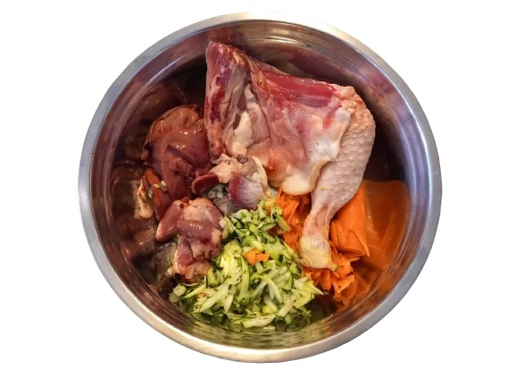

Muchos clientes nos lo cuentan a las pocas semanas de empezar: «Ahora casi no bebe, ¿es normal?». En la mayoría de los casos, sí. La explicación está en lo que hay en el plato.
La carne cruda ya lleva agua
La carne, las vísceras, la verdura y la fruta frescas contienen agua de forma natural. Con cada ración de BARF, tu perro o tu gato recibe una buena parte del agua que necesita. Por eso es normal que luego vaya menos al bebedero: no es que se hidrate menos, sino que bebe de otra manera.
Nuestras recetas llevan un 60 % de carne, un 20 % de hueso, un 15 % de vísceras y un 5 % de verdura y fruta. La de ternera de Andorra, por ejemplo, lleva carne de ternera, pulmón, corazón, riñón, hígado y ternillas, con calabacín, zanahoria y manzana. Todo fresco, picado y congelado, nunca secado.

El pienso es un alimento seco
Para fabricar el pienso se deshidratan los ingredientes, y muchos piensos llevan una parte importante de harinas y cereales. El resultado es una croqueta seca que aguanta mucho tiempo fuera de la nevera, pero que casi no aporta agua. El animal lo compensa bebiendo. Por eso muchos perros y gatos que comen pienso vacían el bebedero a menudo y necesitan orinar muchas veces al día.
El caso de los gatos
Los gatos beben poco por naturaleza: sus antepasados sacaban casi toda el agua de sus presas. A muchos les cuesta beber del bebedero el agua que no les da el pienso. Una comida húmeda como el BARF se parece más a lo que comerían en la naturaleza. Si tu gato ha tenido problemas urinarios o de riñón, habla con tu veterinario antes de cambiarle la dieta.
Qué es normal y qué no
- Normal: que vaya menos al bebedero después de pasar a BARF, sobre todo los días frescos.
- Normal: que beba más después de una excursión o cuando hace calor.
- Consulta con el veterinario si de repente bebe mucho más de lo habitual, si deja de beber, si orina muy a menudo o le cuesta, o si lo ves decaído.
BARFEAND es un alimento complementario para perros y gatos. Para una alimentación equilibrada, complétalo con los suplementos recomendados (como aceites ricos en omega 3) y consulta con tu veterinario.
Consejos para que esté bien hidratado
- Agua fresca siempre: aunque coma BARF, deja el bebedero lleno y limpio.
- Descongela en la nevera: así la ración conserva sus jugos. Una vez descongelada, dásela en las 48 horas siguientes y no la vuelvas a congelar.
- Gatos: ponles varios cuencos o una fuente, lejos de la comida.
- Ración justa: calcula la cantidad con la calculadora BARF.
- Cambio poco a poco: sigue la guía Cómo empezar con BARF.
En resumen
Si tu perro o tu gato bebe menos desde que come BARF, normalmente es porque la comida ya le da agua. Déjale siempre agua fresca y vigila los cambios bruscos. Puedes ver nuestras recetas o escribirnos por WhatsApp al +376 678 536 si tienes dudas.